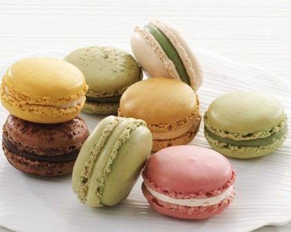

马卡龙，又称作玛卡龙、法式小圆饼，是一种用蛋白、杏仁粉、白砂糖和糖霜制作，并夹有水果酱或奶油的法式甜点。口感丰富，外脆内柔，外观五彩缤纷，精致小巧。
Macaron一词本是法语，实际发音较接近"马卡红"。"马卡龙"是使用英语发音音译的结果。
相传，早期一些素食修女，制作出用鸡蛋清和杏仁粉烘制的蛋白杏仁饼代替荤食，这便是马卡龙的雏形。如今马卡龙的英文Macaron就源于意大利语Maccarone（杏仁酱）。
法国大革命期间，天主教受到革命党人打压，神职人员境况不佳。修女们为了生计，偷偷贩卖她们的蛋白杏仁饼，渐渐把蛋白杏仁饼传到了法国。
